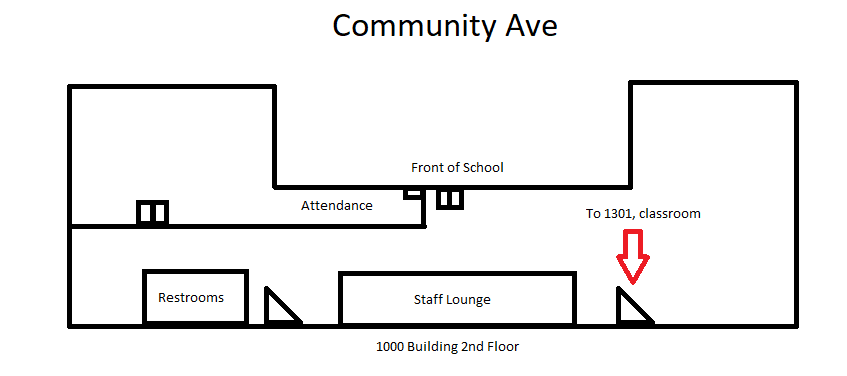
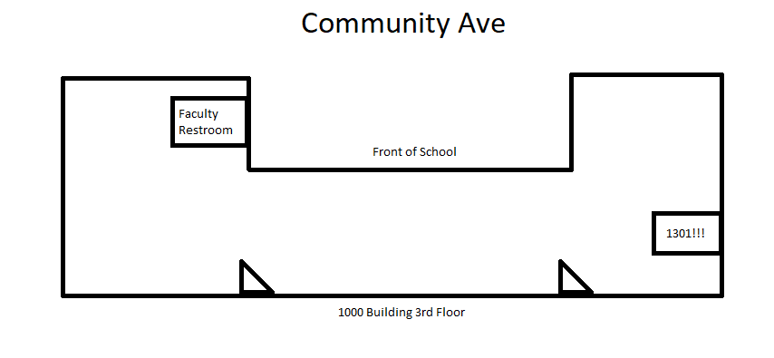

Computer Science - Substitute
Hello friend! For 4/8/2024. Updated last at: 6:50am - 4/8/2024 https://jacobpoole.net/Sub
Thank you for your help and for substituing for my class!
If you have questions or need me, feel free to email me at jpoole@gusd.net
Attendance
The following are my periods:
Period 1: AP Computer Science
Period 3: AP Computer Science
Lunch
Period 5: AP Computer Science
Period 7: Introduction to Engineering - ROOM 8102
Seating Chart if you need it.
Classwork
AP Computer Science Agenda:
All wonderful classes, maybe light reminder to work on something.
1. Students will have free time to work on Lab 70. That should take the entire duration of the period.
Intro to Engineering Agenda:
This class does get loud and chaotic at some points.
1. Students will work all period on their website update. This will be posted to Google Classroom for everyone to complete. That is all they need to do this period.
For Period 1 and 2 Homeroom: Students can chill for homeroom.
Behavior
Hall Pass: Usually I let one student out at a time for the restroom. There is a computer kiosk that every student should sign out of on the computer cart.
Generally, students should be pretty well behaved and should be working on their labs.
Students may be on their phones during class and I'm generally fine with that. If anything, you're welcome to remind them to work on labs to keep pushing forward in content.
Period 7: This is probably the loudest period. They may get off task, just try to remind lightly to be working on their websites.
References
1. Map of the 1000 building, restrooms shown, staff lounge shown.


2. There is a fridge and microwave in the backroom of my classrom that you're free to use!